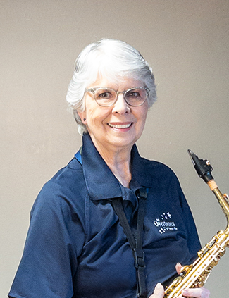
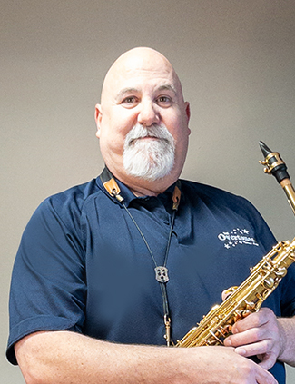
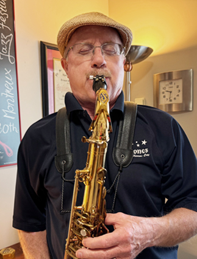
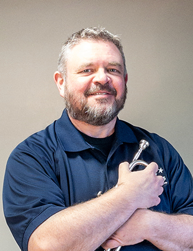
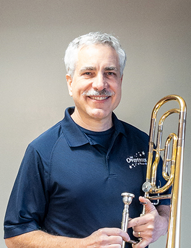
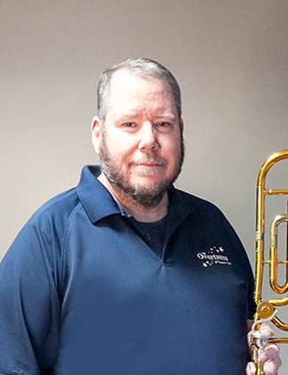
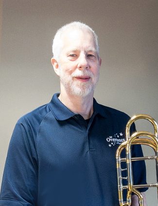
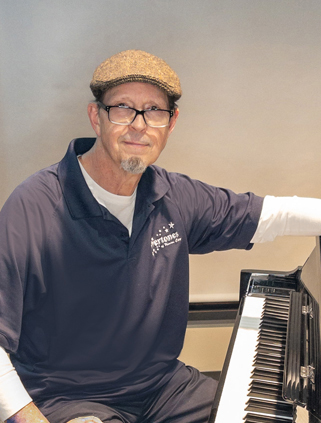
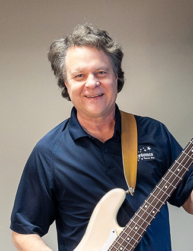

15 talented musicians making Kansas City swing since 1997
Our ensemble brings together some of Kansas City's finest musicians, each bringing their unique talent and passion to create the signature Overtones sound.









We'd love to make your next event swing!
Email: overtonesofkc@gmail.com
Contact Us to Book →